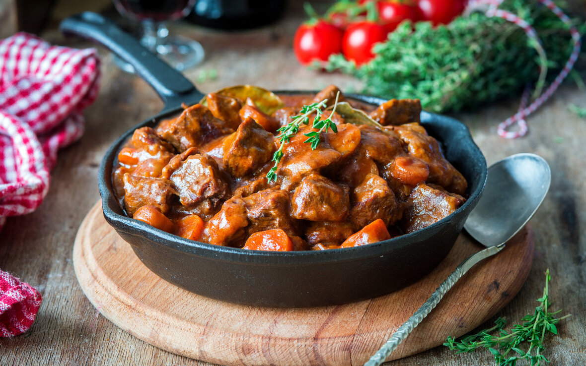

PRATOS
Bœuf Bourguignon
34R$
Um prato muito tradicional e que possui receitas renovadas. Pode ser encontrado em restaurantes de cozinha mais típica.
Trata-se de um ensopado de carne de vaca cozida em vinho tinto e legumes. Existe também a versão de origem burguesa,
o Blanquette de Veau, que é um ensopado feito à base de carne de vitela, cenoura e com molho de natas.
Existem ainda outros tipos de ensopados do mesmo gênero, por isso, a dica é experimentar qual vai agradar mais seu paladar.
Quiche Lorraine

32R$
Originado na região de Lorena., na Alsácia, o Quiche Lorraine é uma "torta" feita com natas, ovos e bacon fumado. Hoje, sua
receita foi aprimorada e há outras versões de sabores como com cogumelos, alho francês ou frango.